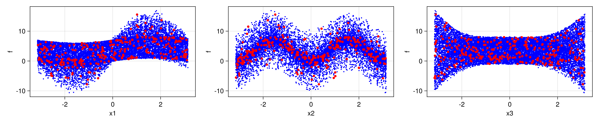
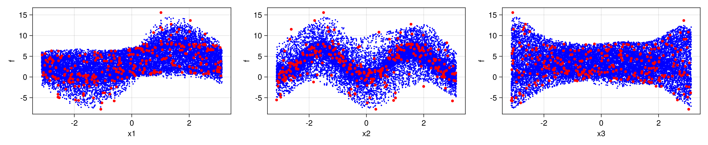

Global Sensitiviy Analysis for an emulated Ishigami function
In this example, we assess directly the performance of our machine learning emulators. The task is to learn a function for use in a global sensitivity analysis. In particular, we learn the Ishigami function
\[f(x; a, b) = (1 + bx_3^4)\sin(x_1) + a \sin(x_2), \forall x\in [-\pi,\pi]^3\]
with $a=7, b=0.1$. In this example, global sensitivity analysis refers to calculation of two Sobol indices. The first index collects proportions $V_i$ (a.k.a firstorder) of the variance of $f$ attributable to the input $x_i$, and the second index collects proportions $TV_i$ (a.k.a totalorder) of the residual variance having removed contributions attributable to inputs $x_j$ $\forall j\neq i$. The Ishigami function has an analytic formula for these Sobol indices, it is also known that one can obtain numerical approximation through quasi-Monto-Carlo methods by evaluating the Ishigami function on a special quasi-random Sobol sequence.
To emulate the Ishigami function, the data consists of 300 pairs $\{x,f(x)+\eta\}$ where $\eta \sim N(0,\Sigma)$ is additive noise, and the x are sampled from the Sobol sequence. The emulators are validated by evaluating the posterior mean function on the full 16000 points of the Sobol sequence and the Sobol indices are estimated. We rerun the experiment for many repeats of the random feature hyperparameter optimization and present the statistics of these indices, as well as plotting a realization of the emulator.
We use the package GlobalSensitivityAnalysis.jl for many of the GSA tools.
Walkthrough of the code
We first load some standard packages
using Distributions
using DataStructures # for `OrderedDict`
using Random
using LinearAlgebra
using CairoMakie, ColorSchemes and the packages for providing the Ishigami function, Sobol sequence, and evaluation of the indices
using GlobalSensitivityAnalysis # for `SobolData`
const GSA = GlobalSensitivityAnalysisthen the CES packages for the emulators
using CalibrateEmulateSample.Emulators # for `SKLJL`, `GaussianProcess`, `SeparableKernel`, `LowRankFactor`, `OneDimFactor`, `ScalarRandomFeatureInterface`, `Emulator`
using CalibrateEmulateSample.DataContainers # for `PairedDataContainer`
using CalibrateEmulateSample.EnsembleKalmanProcesses # for `DataMisfitController`We set up the sampling procedure, evaluate the true ishigami function on these points, and calculate the sobol indices
n_data_gen = 2000
data = SobolData(
params = OrderedDict(:x1 => Uniform(-π, π), :x2 => Uniform(-π, π), :x3 => Uniform(-π, π)),
N = n_data_gen,
)
# To perform global analysis,
# one must generate samples using Sobol sequence (i.e. creates more than N points)
samples = GSA.sample(data)
n_data = size(samples, 1) # [n_samples x 3]
# run model (example)
y = GSA.ishigami(samples)
# perform Sobol Analysis
result = analyze(data, y)Next we create the noisy training data from the sequence samples
n_train_pts = 300
ind = shuffle!(rng, Vector(1:n_data))[1:n_train_pts]
# now subsample the samples data
n_tp = length(ind)
input = zeros(3, n_tp)
output = zeros(1, n_tp)
Γ = 1e-2
noise = rand(rng, Normal(0, Γ), n_tp)
for i in 1:n_tp
input[:, i] = samples[ind[i], :]
output[i] = y[ind[i]] + noise[i]
end
iopairs = PairedDataContainer(input, output)We have a few cases for the user to investigate
cases = [
"Prior", # Scalar random feature emulator with no hyperparameter learning
"GP", # Trained Sci-kit learn Gaussian process emulator
"RF-scalar", # Trained scalar random feature emulator
]Each case sets up a different machine learning configuration in the Emulator object.
For the random feature case, RF-scalar, we use a rank-3 kernel in the input space, and 500 features for prediction, though for efficiency we use only 200 when learning the hyperparameters. The relevant code snippets are
nugget = Float64(1e-12)
overrides = Dict(
"scheduler" => DataMisfitController(terminate_at = 1e4),
"n_features_opt" => 200,
)
kernel_structure = SeparableKernel(LowRankFactor(3, nugget), OneDimFactor())
n_features = 500
mlt = ScalarRandomFeatureInterface(
n_features,
3,
rng = rng,
kernel_structure = kernel_structure,
optimizer_options = overrides,
)For the gaussian process case GP we use the sci-kit learn package, a default squared exponential kernel with lengthscale learnt in each input dimensions. We do not learn an additional white kernel for the noise.
gppackage = Emulators.SKLJL()
pred_type = Emulators.YType()
mlt = GaussianProcess(
gppackage;
prediction_type = pred_type,
noise_learn = false,
)We finish by building the emulator object
emulator = Emulator(mlt, iopairs; obs_noise_cov = Γ * I, decorrelate = decorrelate)
optimize_hyperparameters!(emulator) # (only needed for some Emulator packages)Results and plots
We validate the emulator by evaluating it on the entire Sobol sequence, and calculating the Sobol indices (presenting mean and std if using multiple repeats.
# predict on all Sobol points with emulator (example)
y_pred, y_var = predict(emulator, samples', transform_to_real = true)
# obtain emulated Sobol indices
result_pred = analyze(data, y_pred')Gaussian Process Emulator (sci-kit learn GP)
Here is the plot for one emulation
and the outputted table of Sobol indices
True Sobol Indices
******************
firstorder: [0.31390519114781146, 0.44241114479004084, 0.0]
totalorder: [0.5575888552099592, 0.44241114479004084, 0.24368366406214775]
Sampled truth Sobol Indices (# points 16000)
***************************
firstorder: [0.31261591941512257, 0.441887746224135, -0.005810964687365922]
totalorder: [0.5623611180844434, 0.44201284296404386, 0.24465876318633062]
Sampled Emulated Sobol Indices (# obs 300, noise var 0.01)
***************************************************************
firstorder: [0.3094638183079643, 0.4518400892052567, -0.007351344957260407]
totalorder: [0.5502469909342245, 0.4587734278791574, 0.23542404141319245]Random feature emulator (Separable Low-rank kernel RF-scalar)
Here is the plot for one emulation
Table for 20 repeats of the algorithm
True Sobol Indices
******************
firstorder: [0.31390519114781146, 0.44241114479004084, 0.0]
totalorder: [0.5575888552099592, 0.44241114479004084, 0.24368366406214775]
Sampled truth Sobol Indices (# points 16000)
***************************
firstorder: [0.31261591941512257, 0.441887746224135, -0.005810964687365922]
totalorder: [0.5623611180844434, 0.44201284296404386, 0.24465876318633062]
Sampled Emulated Sobol Indices (# obs 300, noise var 0.01)
***************************************************************
(mean) firstorder: [0.33605548545490044, 0.41116050093679196, -0.0012213648484969539]
(std) firstorder: [0.05909336956162543, 0.11484966121124164, 0.012908533302492602]
(mean) totalorder: [0.5670345355855254, 0.4716028261179354, 0.24108222433317]
(std) totalorder: [0.10619345801872732, 0.1041023777237331, 0.07200225781785778]